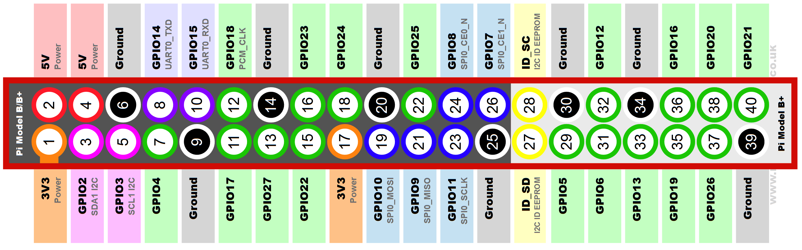

DIY IoT - Easy as Pi!
Network: evening_fun, Password: opihr. For one night only!
Network: evening_fun, Password: opihr
Network: evening_fun, Password: opihr
Part 1: Controlling a Lamp with the Pi


import RPi.GPIO as GPIO
# Set the pi to board mode
GPIO.setmode(GPIO.BOARD)
# Set up
pin = 36
GPIO.setup(pin, GPIO.OUT)
# Set pin voltage to high
GPIO.output(pin, GPIO.HIGH)
# Set pin voltage to low
GPIO.output(pin, GPIO.LOW)
# Clear up
GPIO.cleanup()
How do you know which pin is which?
 https://pinout.xyz/Part 2: Controlling a lamp via a web app
from flask import Flask
app = Flask(__name__)
# Return hello world to the index page
@app.route('/')
def hello_world():
return 'Greetings, Stevenage Branch!
' \
'We hope you enjoy the show!
'
@app.route('/lamp/on')
def turn_me_on():
GPIO.output(pin, GPIO.HIGH)
return 'Turning the lamp on
'
@app.route('/lamp/off')
def turn_me_off():
GPIO.output(pin, GPIO.LOW)
return 'Turning the lamp off
'
app.run(host='0.0.0.0', port=8080, debug=True)
Let's have a go!
192.168.0.105:8080
192.168.0.105:8080/lamp/on
192.168.0.105:8080/lamp/off
Now using a proper web app!
Server Side:
from flask import Flask, request, jsonify, render_template
@app.route('/')
def hello_world():
return render_template('index.html')
@app.route('/lamp', methods=['GET', 'PUT'])
def lamp_stuff():
if request.method == 'PUT':
# Change state
data = request.form
state = data['state']
set_gpio_state(state)
# confirm the state has been set
state = get_gpio_state(pin)
return jsonify(state=state)
app.run(host='0.0.0.0', port=8080, debug=True)
Client side:
html
<div class="OnButton">
<button type="button" class="btn btn-default btn-lg">On<button>
</div>
<div class="OffButton">
<button type="button" class="btn btn-default btn-lg">Off<button>
</div>
<div class="circle"></div>
</div>
js
$(".OnButton").click(function() {
$.ajax({
url: "/lamp",
type: "put",
data: JSON.stringify({"state":"High"})
}).done(function (data) {
// Set virtual LED state
if (data.state === 'High'){
$(".circle").removeClass("off").addClass("on");}
});
});
Server side reminder:
@app.route('/lamp', methods=['GET', 'PUT'])
def lamp_stuff():
if request.method == 'PUT':
# Change state
data = request.form
state = data['state']
set_gpio_state(state)
# confirm the state has been set
state = get_gpio_state(pin)
return jsonify(state=state)
Let's have a go!
192.168.0.105:8080
Part 3: The sensor
sudo cat /sys/bus/w1/devices/<device_number>/w1_slave
class Sensor:
def __init__(self):
self.temperature = 0
# Set up wire1 communicat
os.system('modprobe w1-gpio')
os.system('modprobe w1-therm')
base_dir = '/sys/bus/w1/devices/'
device_folder = glob.glob(base_dir + '28*')[0]
self.device_file = device_folder + '/w1_slave'
def __readSensor(self):
f = open(self.device_file, 'r')
rawData = f.readlines()
f.close()
return rawData
from sensor.sensor import DS18B20 as sensor
# Instantiate Sensor Class
sensor = sensor()
@app.route('/temperature')
def measure_temperature():
measurement = sensor.getMeasurement()
return jsonify(value=measurement.value, time=measurement.timeStamp)
HTML
<div class='bigButton' id='temperatureBtn'>
<div id="current_temperature">Get temperature</div>
</div>
JS
$("#temperatureBtn").click(function() {
$.ajax({
url: "/temperature",
type: "get",
}).done(function (data) {
$( "#current_temperature" ).text( data.value.toFixed(2) + "°C" );
$( "#graphBtn" ).show();
});
});
Let's have a go!
192.168.0.105:8080
Part 4: Bringing it all together - a proper control loop!
from Controller import Controller
# Instantiate Controller Class
set_lower = 15
set_upper = 20
controller = Controller(sest_lower, set_upper)
from Controller import Controller
# Instantiate Controller Class
sest_lower = 15
set_upper = 20
controller = Controller(sest_lower, set_upper)
def get_heater_command():
# Returns true if the heater is to be turned on or false otherwise
measurement = sensor.getMeasurement()
command = controller.get_command(measurement.value)
return command